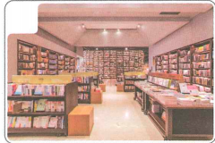
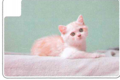
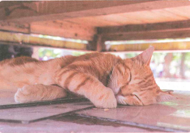
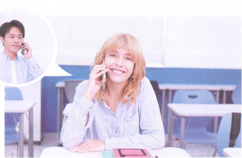
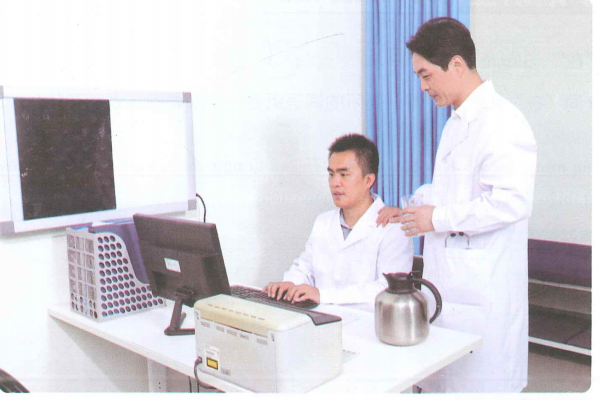
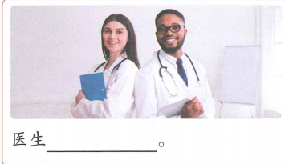
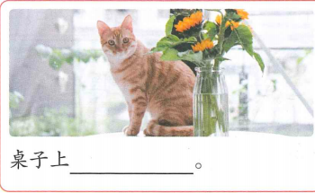

我爸爸也在医院工作
Bố em cũng làm việc ở bệnh viện
23 từ mới, 3 bài khóa, 3 điểm ngữ pháp — chia theo từng cụm nhỏ.
Khởi động
Nhìn hình và chọn từ phù hợp.

📚 Đây là đâu?
🏫 Đây là đâu?

🐱 Đây là gì?
Cụm 1 · Từ vựng
10 từ trước Bài khóa 1.
Bài khóa 1 · 小猫在哪儿

Luyện nói
Chọn một đồ vật và hỏi đáp vị trí: 在哪儿？在桌子上/下、房间里/外…
Ngữ pháp 1 · Phương vị từ
Các phương vị từ chính
房间里有一只小猫。
我们去书店外吧。
小雪的手机在桌子上呢。
Mẫu cấu trúc
房间 + 外 → 房间外
桌子 + 下 → 桌子下
书店 + 前 → 书店前
✏️ Luyện nhanh
Cụm 2 · Từ vựng
7 từ trước phần nghe Bài khóa 2.
Nghe trước Bài khóa 2
🎧 Nghe hội thoại hai lượt rồi chọn đáp án đúng
Bài khóa 2 · 在哪儿见

Ngữ cảnh: Bạch Gia Nguyệt gọi điện cho Lý Văn sau giờ học để hẹn địa điểm và thời gian gặp.
Ngữ pháp 2 · Giới từ 在
Cấu trúc
我在学校吃午饭。
他爸爸在医院工作。
你在哪儿买菜？
Ý nghĩa
在 kết hợp với từ ngữ chỉ vị trí/nơi chốn và đứng trước động từ để chỉ nơi diễn ra hành động.
✏️ Luyện nhanh
Cụm 3 · Từ vựng
6 từ cuối trước Bài khóa 3.
Nghe trước Bài khóa 3
🎧 Nghe hội thoại hai lượt rồi chọn đáp án đúng
Bài khóa 3 · 医院工作

Tiểu Ngữ: “小 + họ” có thể dùng để gọi thân mật người ít tuổi hơn.
Ngữ pháp 3 · Động từ năng nguyện 能
Cấu trúc
下午两点你能到吗？
爸爸能去。
我不能去学校吃午饭。
Ý nghĩa
能 đứng trước động từ, biểu thị năng lực, điều kiện hoặc khả năng làm một việc gì đó.
✏️ Luyện nhanh
✏️ Luyện tập tổng hợp
Ôn lại từ vựng và ba điểm ngôn ngữ chính.


✅ Tổng kết
Bài 8 đã hoàn thành
- 23 từ mới, chia thành 3 cụm.
- 3 bài khóa với audio do giáo viên cung cấp.
- Nút Play + Pause ở mỗi phần nghe.
- Phương vị từ: 上、下、里、外、前、后、外边.
- Giới từ 在 + nơi chốn + động từ.
- 能 + động từ để biểu thị khả năng/điều kiện.
Điểm luyện tập tổng hợp
Chỉ tính 6 câu ở phần luyện tập tổng hợp.